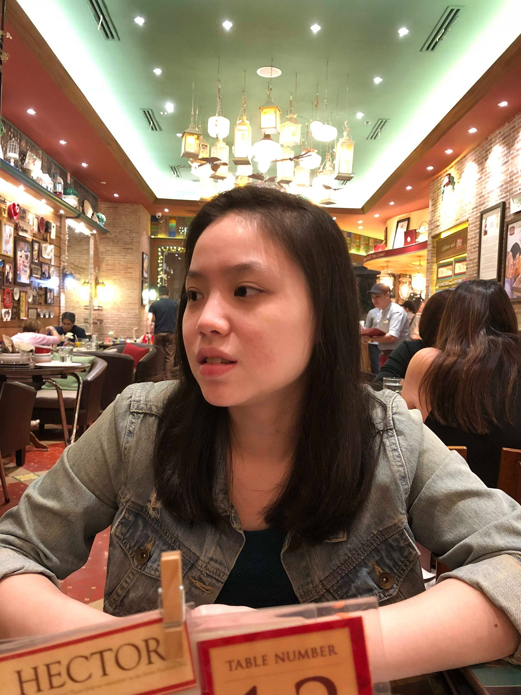

|

A Glimpse of Perfection
Dear Denise,
To everything we've been through so far, all i can say is thank you and my life would have been very different if it weren't for you. I always thought that going into college, I would have trouble making friends and coping with a new environment knowing that my closest friends all went to Ateneo. Learning that you were my classmate even before the year started, I was happy at least to know one person who I ended up becoming very close with. It wasn't out first time meeting when we went to college but despite that, I never got to know you and I can't help but think if that was truly meant to be. I remember when you added me to some groupchats for school because obviously I wasnt added to them since I didn't know anyone. In that instant I was pretty happy because I thought that at least I'm gonna know someone when school actually starts. I was actually pretty awkward and found it hard to talk to you in person if that wasnt obvious LOL. Fast forward that to now and you've taught me a lot of things about myself that I pretty much wouldn't have found if it wasn't for you.
Love
First and the most obvious one of all would be how you taught me how to love. I know I talked about how I didn't believe in love and all even when we were already together. To be honest I really didn't but spending time with you; it made me realize that love can be expressed in different forms but for me the simplest way that I can achieve that is make you happy. I try hard to satisfy you and I know it can get annoying so bear with me. I'm also not the sweetest person in the world so surprises are very hard for me to do but I think I can get there and I appreciate how you aren't the type to require the dude to constantly surprise them. I'm extremely grateful for you and what you've done for me in my life and for that I say I love you.
Thank You
I say thank you because I think you've influenced me for the better especially when it comes to my spending and health in general. I may not listen to you at times but I can honestly say that you've helped me in that regard. You make me want to be a better person and for me that is enough. I'm glad that you have a strong personality in that regard and that is mainly the reason why I want to support you in everything that you do. I'd want as much as possible to give back to you and thank you for helping me grow in all aspects. I will constantly try to help you in all your endeavors and make sure that you're happy.
Sorry
I know that I'm not perfect and I have my fair share of shortcomings and for that I say sorry. I'm sorry for being very highstrung when it comes to your safety. I understand that I shouldn't meddle in your life because we aren't even married or something. I just want you to be happy and I guess I do add to your stresses when I get mad at you at really weird and unimportant things most of the time. I know I can be hot-headed as proof of my stories about my dad and brother and I'm sure you caught a glimpse of that with my brother. Their traits end up going to me and I know how stressful that can be and I'm sorry.
THE BEST!!
Always remember that I'm here to shoulder your pains, your anger or however you feel when you need to. After all, I want to be a person you can look to when you need comfort. And like I always say, have more confidence in yourself and believe in your abilities. You are the absolute bestest person if you truly believe in yourself and I want to see you really grow out of your shell because I know you can do more.
|